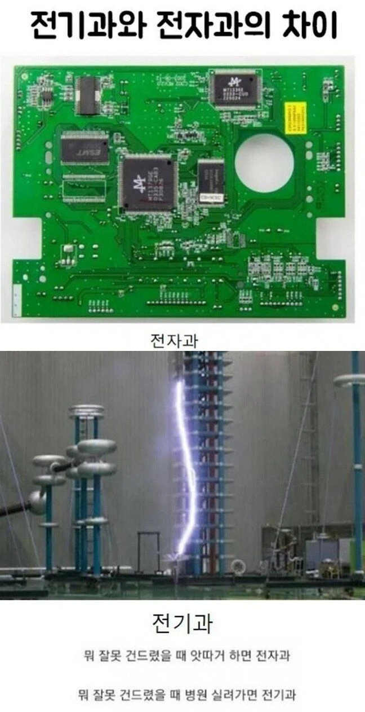

계속 따거 따거 하면 중국어과

일월대도
한양대도
교통대도
한밭대도
충북대도
충남대도
호서대도
경성대도
제주대도
군산대도
순천향대도
홍익대도
전기공학 > 전기+전자+컴공(일부)
전자공학 > 전자+컴공(일부)
오 그럼 다르다기보단 범위로 봐야겠군. 그럼 전기공학부가있으면 같은학교에 전자공학부는 없을수도있겠다
보통은 전기공학 과 컴공전자과 이렇게 있을 수 있쥬
아니면
전기전자공학부로 통칭 할 수 있고용
전기: +에서 -로
전자: -에서 +로
올
전과자 아빠 어디감
알던내용이지만 막줄땜에 ㅊㅊ
남자라면 기계지
샹크스가 되면 기계과
디지털신호처리 같은거 하면 전자과
일렉트로마그네틱 포스 필드를 상대성이론에 따라 조율하고 다루면 전기과
저거 레알인게 나 고딩때 전자과는 컴퓨터로 뭐 배우고 그거 겨루는 기능경기가 있는데
전기과는 기능경기 출전할때 뭐 서명하고 나감 문제발생으로 사망시 문제삼지 않겠다 이런거 ㅋㅋㅋㅋㅋㅋㅋㅋㅋㅋㅋ
병원 장례식장 직행이지
본문보다 밑의 글이 더 웃김ㅋㅋ
ㅋㅋㅋㅋㅋㅋ따거 좋았다
따흐흑 따흐흑 하면?
본문이 개웃기네 ㅋㅋㅋㅋㅋㅋ
5V 가
오차 범위: 전기
완전 소중: 전자
라고 본 거 같애
오늘 한번 죽어보자
워 아이닝 아 따거 따거 따 따 따 따
그렇군 정보 고맙군~